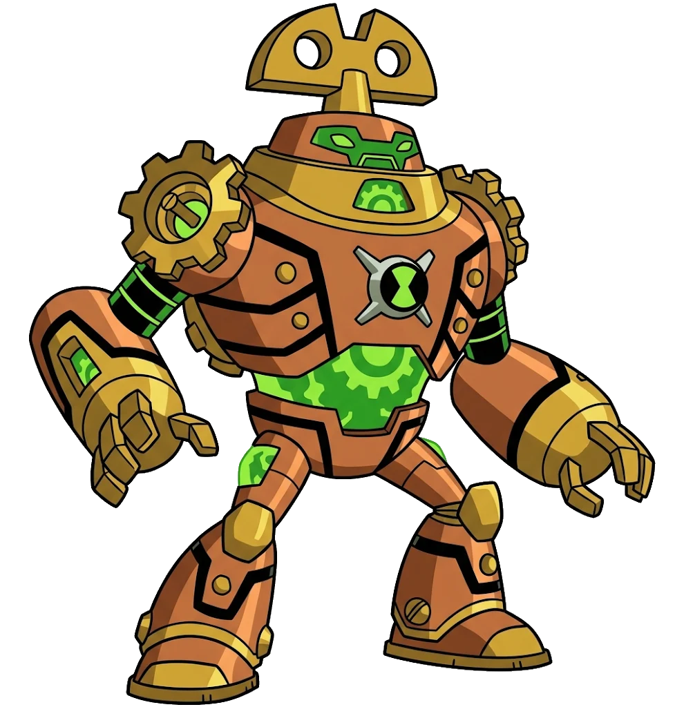

CONTRA-TEMPO
- Espécie: Chronosapien
- Planeta: Desconhecido
- Habilidade: Cronocinese
- Elemento: Tempo
- Tipo: Alien
← Voltar para a Coleção
CONTRA-TEMPO
"Parece que o seu tempo... acabou!"
Visão Geral
Contra-Tempo é a amostra de DNA de um Chronosapien. Ele possui um corpo mecânico e robusto semelhante a um relógio dourado antigo, com uma chave de corda no topo da cabeça e engrenagens visíveis em seu interior.
Habilidades e Poderes
Domina a cronocinese, podendo disparar raios temporais que envelhecem objetos até virarem pó ou enviam alvos para outras linhas do tempo. Também consegue desacelerar o tempo ao seu redor e projetar hologramas de eventos que aconteceram no passado.